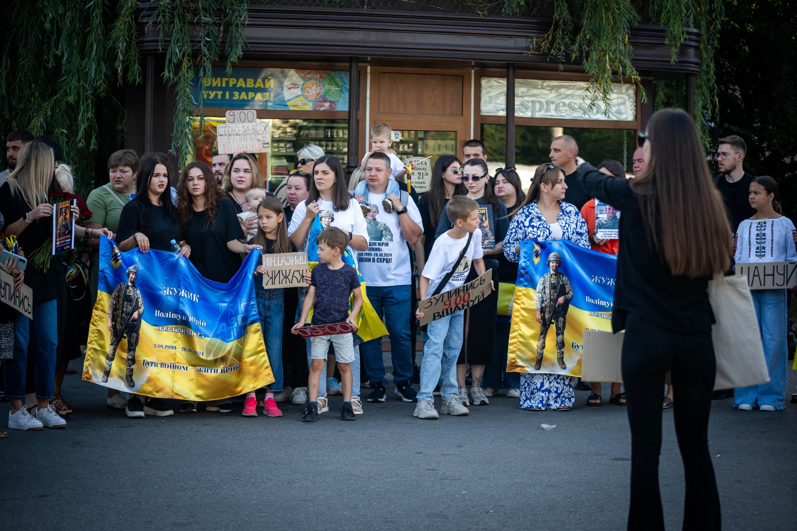
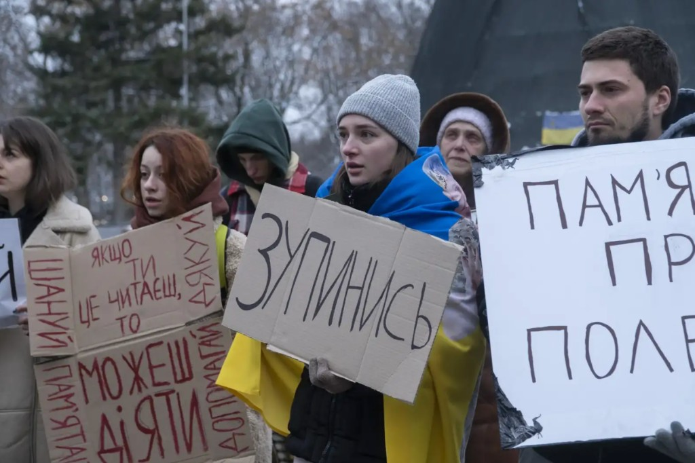
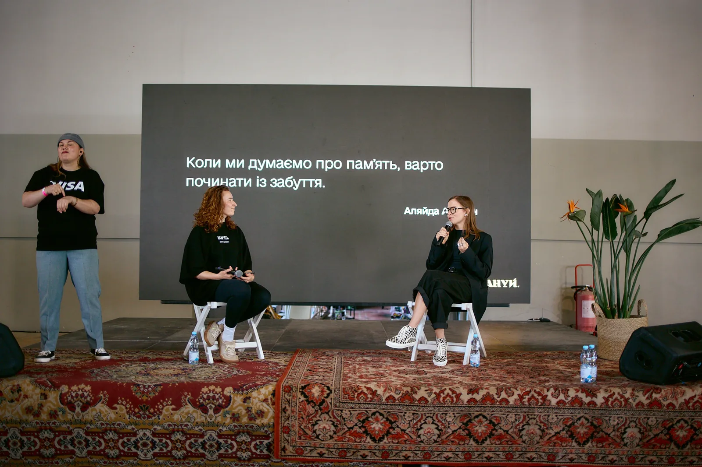
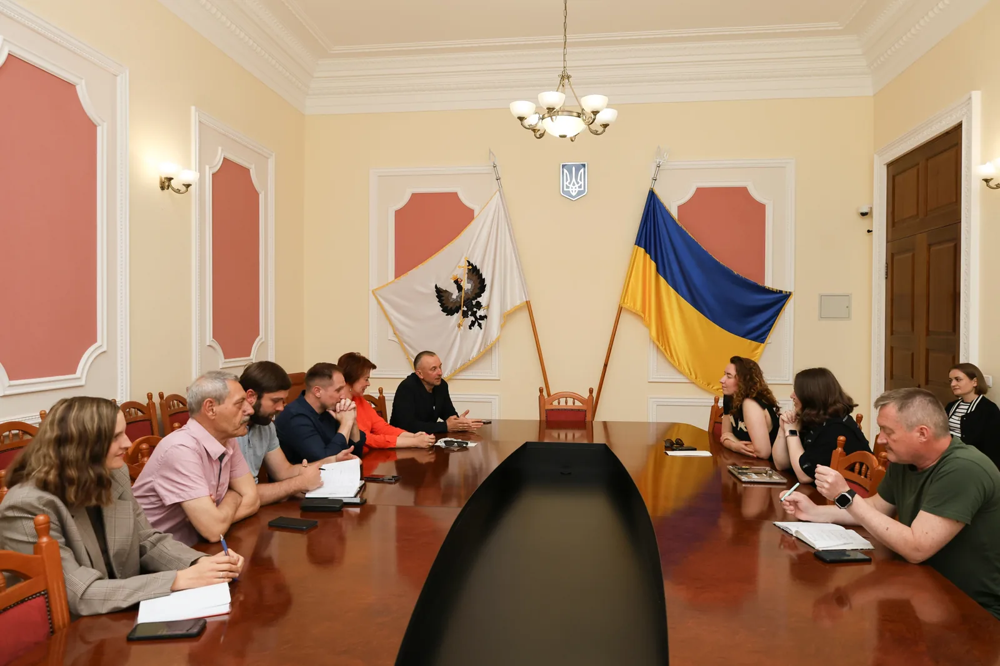

Як впровадити Хвилину мовчання в місті: приклади розпоряджень, листів, комунікацій і потрібні документи.
Робота з громадами
Працюємо з громадами та координаторами осередків, допомагаємо створювати й впроваджувати локальні практики памʼяті. Поширюємо ініціативи в громадах, розробляємо ритуали памʼяті та прощання.

Спільнота
Маємо активну спільноту координаторів у містах
Поступово формуємо мережу людей, які займаються памʼяттю на місцях, зʼєднуємо їх між собою та створюємо простір для постійного обміну досвідом. На основі побаченого в регіонах розробляємо й поширюємо нові практики памʼяті чи цілі ритуали прощання.
-
Чати міст по Україні до акцій 25 міст · Telegram
- Біла Церква (відкриється в новій вкладці)
- Бровари (відкриється в новій вкладці)
- Вінниця (відкриється в новій вкладці)
- Дніпро (відкриється в новій вкладці)
- Житомир (відкриється в новій вкладці)
- Запоріжжя (відкриється в новій вкладці)
- Івано-Франківськ (відкриється в новій вкладці)
- Ірпінь (відкриється в новій вкладці)
- Київ (відкриється в новій вкладці)
- Кривий Ріг (відкриється в новій вкладці)
- Луцьк (відкриється в новій вкладці)
- Львів (відкриється в новій вкладці)
- Миколаїв (відкриється в новій вкладці)
- Миргород (відкриється в новій вкладці)
- Одеса (відкриється в новій вкладці)
- Олександрія (відкриється в новій вкладці)
- Полтава (відкриється в новій вкладці)
- Рівне (відкриється в новій вкладці)
- Суми (відкриється в новій вкладці)
- Тернопіль (відкриється в новій вкладці)
- Ужгород (відкриється в новій вкладці)
- Харків (відкриється в новій вкладці)
- Хмельницький (відкриється в новій вкладці)
- Черкаси (відкриється в новій вкладці)
- Чернігів (відкриється в новій вкладці)
Не знайшли свого міста? Напишіть нам у Telegram: @moment_of_honor (відкриється в новій вкладці)
Дослідження
Досліджуємо, як міста працюють з темою памʼяті
Чернігів
Запоріжжя
Миколаїв
Павлоград
Кривий Ріг
- Харків Дослідження міських практик памʼяті, прощання та меморіалізації в Харкові

Під час поїздок ми зустрічаємося з родинами загиблих, місцевими активістами, представниками міста та області, відвідуємо кладовища, меморіали та інші місця памʼяті, досліджуємо вже наявні ритуали й практики.
Під час таких поїздок не лише збираємо досвід, а й допомагаємо людям знаходити одне одного. Обмінюємося рішеннями, які вже працюють в інших містах, говоримо про різні практики та намагаємося зрозуміти, чому одна й та сама ідея може працювати в одній громаді й не працювати в іншій.
Для громад
Що ми вже маємо для громад
Оформлення Хвилини мовчання у просторі міста.
Візуальні матеріали
Готовий запис чоловічим (Даня Хомутовський) і жіночим (Соня Сотник) голосами. Хочете оголошення голосом для свого міста?
Напишіть нам: momentofhonor
Звук-оголошення Хвилини мовчання

Проєкти в межах діяльності
Усі проєкти-

Хвилина мовчання
Ритуал подяки, пошани та памʼяті. Символічна обʼєднавча дія, відкрита для широкого кола суспільства: зберігати памʼять про війну і спільну боротьбу за незалежність.
-

Прощання з прапором
Церемонія, коли державний символ завершує службу — і ми визнаємо це з повагою. Коли прапор зношується й втрачає вигляд, постає питання: що робити далі?
-

Тризна
Публічне прощання з військовим — спосіб вшанувати людину й подякувати за службу. Прощання з містом — остання зустріч загиблого з громадою; особливо важлива для родини.
Інші напрями
Усі напрями-

Бізнес
Допомагаємо бізнесу інтегрувати культуру памʼяті у свої комунікації. Проводимо консультації, аудити, лекції та сесії, щоб компанії могли говорити про війну, втрати й памʼять.
-

Держава
Передаємо державним інституціям напрацьовані практики, рекомендації та інструкції й працюємо над їхнім системним впровадженням.